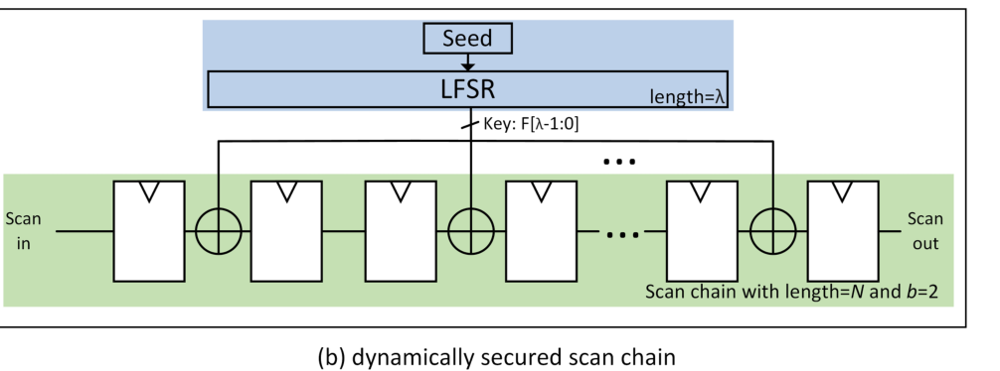
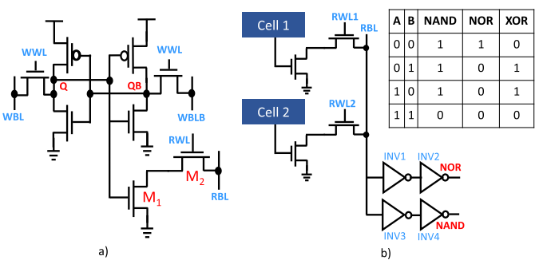

Projects
FPGA accelerators for reservoir computing

A complete echo state network on one FPGA: inference and recursive-least-squares (RLS) training share the same DSP arrays, so the channel predictor retrains itself on chip.

Nine DSP slices multiply-accumulate while a CLB adder tree compresses their partial sums, so the DSPs never sit idle; a range-addressable tanh keeps the activation cheap.

A low-cost reservoir neuron that hard-wires the fixed, sparse ESN weights into a bit-serial multiplier, with canonical-signed-digit encoding and an optimized tanh.
Real-time wireless systems

An end-to-end, live channel-prediction loop for a distributed MIMO (DMIMO) system: a 4-antenna base station serves two 2-antenna users through a radio channel emulator, and an FPGA reservoir-computing accelerator predicts each user's channel frame by frame.

A DSP48E1-array reservoir neuron for 2×2 MIMO-OFDM symbol detection, tested over the air with an SDR platform (PC, Virtex-7 FPGA and two USRPs running a GNU Radio Wi-Fi link).

A hardware-accelerated reservoir neuron speeds up an ESN symbol detector for massive MIMO-OFDM, validated on a Virtex-7 FPGA across a range of MIMO configurations against linear MMSE detection.
Neuromorphic and spiking computing
A spiking reservoir with on-chip reward-modulated STDP learning, applied to spectrum sensing.

A multivariate Legendre spiking neural network on Intel's Loihi-2 neuromorphic chip, for time-series classification and 5G jamming detection.
Surveys and book chapters

Two surveys: reservoir computing from foundations to neuromorphic intelligence, and echo state networks with benchmarks and applications to next-G wireless communication.

Two book chapters: AI-powered FPGA CAD flows, and machine-learning-enhanced analysis and design for trustworthy integrated circuits.
Earlier projects: VLSI, hardware security and networking

Implemented a dynamically secured scan chain and verified a scan-based attack; the follow-up GF(2) algebraic flush attack recovers the dynamic key by solving linear equations over GF(2).

A 10T-SRAM cell reads Q and QB onto two read bit-lines at once; two cells sharing a bit-line, with tuned inverter trip points, compute NOR and NAND in memory.
Design of a 4-node chip multiprocessor.
Design and implementation of a CPU hardware system.
A clustering-based handover and target-satellite selection algorithm for an LEO satellite network, aiming at fewer handovers and better bitrate, delay and jitter.